Neue Öffnungszeiten der Bibliothek
Ab dem 1. Dezember ist die Bibliothek montags bis freitags von 9 bis 18 Uhr geöffnet, samstags bleibt sie geschlossen. Zurückgegebene Bücher können weiterhin in den Rückgabekasten am Eingang gelegt werden.
Glance is a small tray app for Windows and macOS. It takes a screenshot, sends it to the AI you picked and shows the answer in a small popup in the corner, or on another screen if you choose one.
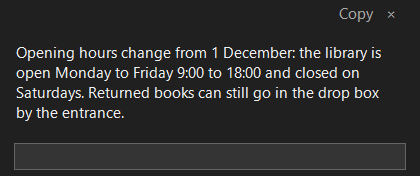
The answer on the ScreenPad, under the main screen.
I have an ASUS Zenbook with a ScreenPad, a second small touch screen built into the laptop. It is a good place for an answer: you can see it, and it doesn't cover what you are working on. Glance reads the main screen and puts the answer on the ScreenPad.
The use turned out to be wider than that. Ask what an error message means or what a chart shows, translate a page or a menu, or summarize the email in front of you. Any second screen works, and with one screen the answer sits in the corner.
To read only part of the screen, press Ctrl+Shift+D and drag out an area. You can type a follow-up question in the popup, and it keeps the conversation going. You can also read the screen under the mouse, a specific screen, all screens, or the active window.
You don't need a second screen. The ScreenPad is just how I use it; Glance works the same on a single laptop screen or a desk with two monitors.
In the menu, Show answer on picks the screen that gets the popup. Identify screens shows a big number on each display for two seconds so you know which is which. Answer position puts the popup in the bottom right or the center, or in an area you draw yourself.
Answer goes to can also copy the answer to the clipboard, or only copy it without showing anything, so you can paste it where you need it.
The Plain black answer option swaps the dark gray panel for pure black with white text, and Text opacity turns the text down if it is too bright. The hide key (Ctrl+Shift+B) blanks the text and leaves the screen black.
A mode is a prompt. Answer, Explain, Translate and Summarize come built in, and you can edit their prompts or add your own, for example one that always replies in two lines or always in your own language.
You can sign in with a ChatGPT, Claude or Google account through the official command-line tools (Codex CLI, Claude CLI and Gemini CLI), with no API key, or use an API key for the Claude API, OpenAI, Gemini or any OpenAI-compatible server, including one running on your own computer. The usage limits of the account's plan apply.
Each provider's reasoning effort can be set in Connect an AI, in the menu or in Settings, where the provider supports it. The Gemini CLI uses the model choice instead.
You can save several keys and providers and put them in order. When a key fails or a limit runs out, Glance moves on to the next one.
Glance has no accounts, no analytics and no telemetry. When you read the screen, it sends the screenshot, the mode's prompt and any follow-up questions you type to the AI you selected. Nothing else is sent to it. With the Claude, Codex and Gemini CLIs, Glance hands the screenshot to the claude, codex or gemini program on your computer, which talks to Anthropic, OpenAI or Google itself. If you list more than one AI, the same screenshot can go to each in turn when one fails.
API keys are encrypted for your user account, with DPAPI on Windows and in the Keychain on a Mac. Screenshots stay in memory while they are sent and are not written to disk, except for the Codex and Gemini CLIs, which get the screenshot in a private temporary folder that is deleted right after the request. If you choose to copy the answer, it sits on the clipboard where other apps can read it. Keeping the last ten answers is optional, and they are encrypted too. Once a day Glance asks GitHub for the latest release to tell you about updates; you can turn that off. The full text is in PRIVACY.md.
| Keys | Action |
|---|---|
| Ctrl+Shift+Q | Read the screen |
| Ctrl+Shift+D | Read an area you drag out |
| Ctrl+Shift+X | Close the answer |
| Ctrl+Shift+B | Hide the answer text and keep the screen black |
These are the defaults; change them in the settings window.
Get the portable exe (x64 or arm64) or the installer from Releases. The portable exe needs no install and runs from anywhere.
The app is not signed. SmartScreen will show "Windows protected your PC": choose More info, then Run anyway. If Smart App Control is on, Windows blocks unsigned apps entirely and Glance will not start.
Download the Mac zip from Releases, unzip it and move Glance to Applications. It needs macOS 14 or later.
The app is not notarized, so macOS blocks it the first time. Open System Settings > Privacy & Security and click Open Anyway (macOS 15 and later no longer offer this from the right-click menu), or run xattr -dr com.apple.quarantine /Applications/Glance.app.
The first time it reads the screen, macOS asks for Screen & System Audio Recording access. It asks again after each update because the app has no stable signing identity.
After that, open the tray menu (the menu bar on a Mac), choose Connect an AI... and pick a provider. The interface is in English and Turkish.
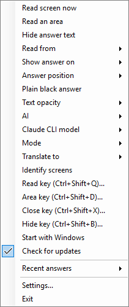
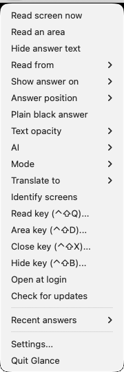
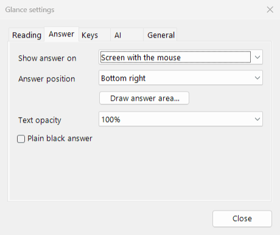
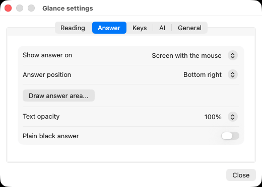
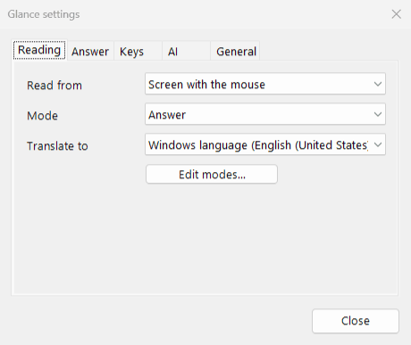
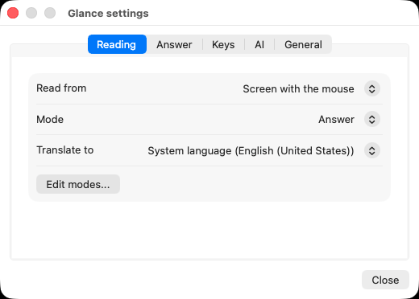
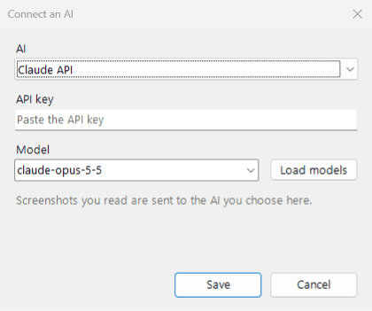
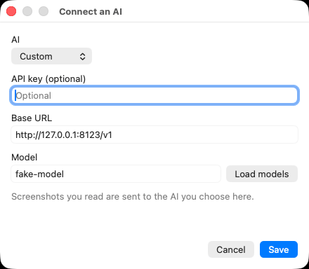
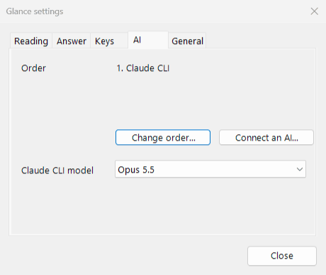
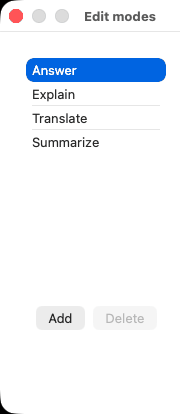